사회조사분석사-2급 (2017-05-07 기출문제)
1과목: 조사방법론 I
1. 양적연구와 비교한 질적연구의 특징에 해당하지 않는 것은?
- 비공식적인 언어를 사용한다.
- 주관적 동기의 이해와 의미해석을 하는 현상학적ㆍ해석학적 입장이다.
- 비통제적 관찰, 심층적ㆍ비구조적 면접을 실시한다.
- 자료분석에 소요되는 시간이 짧아 소규모 분석에 유리하다.
(정답률: 77%)

2. 다음 중 가급적 적은 수의 변수로 보다 많은 현상을 설명하고자 하는 것은?
- 간결성의 원칙(principle of parsimony)
- 관료제의 철칙(iron law of bureaucracy)
- 배제성의 원칙(principle of exhaustiveness)
- 포괄성의 원칙(principle of exhaustiveness)
(정답률: 71%)
3. 사례연구에 관한 설명으로 틀린 것은?
- 사례연구는 질적 조사방법으로 양적인 방법을 사용하여 수집한 증거는 이용하지 않는다.
- 사례연구에서는 기존 문서의 분석이나 관찰 등과 같은 방법으로 자료를 수집한다.
- 사례는 개인, 프로그램, 의사결정, 조직 사건 등이 될 수 있다.
- 사례연구는 한 특정한 사례에 대해 집중적으로 연구하는 것이다.
(정답률: 81%)
4. 다음에 해당하는 외생변수의 통제방법은?
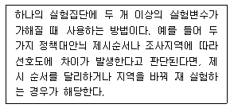
- 제거
- 상쇄
- 균형화
- 무작위화
(정답률: 73%)
5. 개인의 특성에서 집단이나 사회의 성격을 규명하거나 추론하고자 할 때 발생할 수 있는 오류는?
- 원자 오류(atomistics fallacy)
- 개인주의적 오류(individualistic fallacy)
- 생태학적 오류(ecological fallacy)
- 종단적 오류(longitudinal fallacy)
(정답률: 81%)
6. 다음 중 표준화 면접의 장점과 가장 거리가 먼 것은?
- 신뢰도가 높다.
- 타당도가 높다.
- 면접결과의 수치화가 용이하다.
- 정보의 비교가 용이하다.
(정답률: 62%)
7. 다음 중 개방형 질문(open-ended questions)을 이용하기에 적합하지 못한 경우는?
- 응답자들의 지식수준이 높아 면접자의 도움 없이 독자적으로 응답할 수 있는 경우
- 응답자에 대한 사전지식의 부족으로 응답을 예측할 수 없는 경우
- 특정 행동에 대한 동기조성과 같은 깊이 있는 내용을 다루고자 하는 경우
- 숙련된 전문 면접자보다 자원봉사자에 의존하여 면접을 실시하는 경우
(정답률: 68%)
8. 다음 중 가설로 적합하지 않은 것은?
- 지연(地緣) 때문에 행정의 발전이 저해된다.
- 부모간의 불화가 소년범죄를 유발한다.
- 기업 경영은 근본적으로 인간이 결정한다.
- 도시 거주자들이 농어촌에 거주하는 사람들 보다 더 야당성향을 띤다.
(정답률: 80%)
9. 응답자의 대답이 불충분하거나 모호할때 추가질문을 통해 정확한 대답을 이끌어내는 면접조사상의 기술은?
- 심층면접 (in-depth interview)
- 래포 (rapport)
- 투사법(projective method)
- 프로빙 (probing)
(정답률: 71%)
10. 이메일을 활용한 온라인 조사의 장점과 가장 거리가 먼 것은?
- 신속성
- 저렴한 비용
- 면접원 편향 통제
- 조사 모집단 규정의 명확성
(정답률: 81%)
11. 다음 중 우편조사의 특징과 가장 거리가 먼 것은?
- 최소의 경비와 노력으로 광범위한 지역과 대상을 표본으로 삼을 수 있다.
- 다른 조사에 비해 응답률이 높다.
- 면접조사에 비해 응답자에게 익명성에 대한 확신을 부여할 수 있다.
- 조사자의 개인차에서 오는 영향을 배제 시킬 수 있다.
(정답률: 82%)
12. 어떤 연구자가 한 도시의 성인 500명을 무작위로 추출하여 인터넷 이용이 흡연에 미치는 영향을 조사한 결과, 인터넷 이용량이 많은 사람일수록 흡연량도 유의미하게 많은 것으로 나타났다. 이를 토대로 인터넷 이용이 흡연을 야기 시킨다는 인과적인 설명을 하는 경우 가장 문제가 되는 인과성의 요건은?
- 경험적 상관
- 허위적 상관
- 통계적 통제
- 시간적 순서
(정답률: 67%)
13. 다음의 사례에서 활용한 연구방법은?
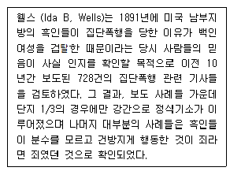
- 내용분석법
- 서베이법
- 투사법
- 종단연구
(정답률: 85%)
14. 다음 설명에 해당하는 기계를 통한 관찰도구는?
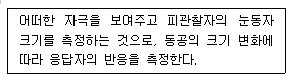
- 오디미터(audimeter)
- 사이코갈바노미터(psychogalvanometer)
- 퓨필로미터(pupilometer)
- 모션 픽처 카메라(motion picture camera)
(정답률: 61%)
15. 질문지 초안 작성 후 사전검사(pretest)에서 고려해야 할 사항과 가장 거리가 먼 것은?
- 응답자체의 거부 여부
- 응답에 일관성이 있는지의 여부
- 한쪽에 치우치는 응답이 나오는가의 여부
- 사전조사와 본 조사의 응답자 규모가 동일한지의 여부
(정답률: 77%)
16. 다음 상황에서 X, Y, Z에 대한 설명으로 옳은 것은?(오류 신고가 접수된 문제입니다. 반드시 정답과 해설을 확인하시기 바랍니다.)
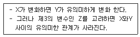
- X는 종속변수이다.
- Z는 매개변수이다.
- Z는 억제변수이다.
- X-Y관계는 허위적(spurious) 관계이다.
(정답률: 33%)
17. 설문항목의 배치에 대한 일반적인 설명으로 틀린 것은?
- 설문항목의 배치는 자료수집의 형태에 따라 달라질 수 있다.
- 민감한 문제들은 설문지의 뒤에 배치한다.
- 특수한 것을 먼저 묻고 나중에 일반적인 것을 묻는다.
- 응답자가 응답 시 피로를 느끼지 않도록 심각하고 골치 아픈 질문은 분산시킨다.
(정답률: 86%)
18. “최근 텔레비전 프로그램에 등장하고 있는 폭력적 장면과 선정적 장면에 대해서 어떻게 생각하십니까?”라는 질문은 주로 어떤 오류를 범하고 있는가?
- 부적절한 언어의 사용
- 비윤리적 질문
- 전문용어의 사용
- 이중적 질문
(정답률: 80%)
19. 다음에서 설명하고 있는 조사방법은?
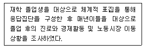
- 집단면접조사
- 파일럿조사
- 델파이조사
- 패널조사
(정답률: 82%)
20. 실험설계를 위하여 충족되어야 하는 조건과 가장 거리가 먼 것은?
- 독립변수의 조작
- 인과관계의 일반화
- 외생변수의 통제
- 실험대상의 무작위화
(정답률: 75%)
21. 과학적 방법의 기본적 가정과 가장 거리가 먼 것은?
- 진리는 절대적이다.
- 모든 현상과 사건에는 원인이 있다.
- 현상을 이해하고 설명할 수 있다.
- 경험과 관찰은 지식의 원천이다.
(정답률: 83%)
22. 과학적 방법의 특징에 해당하지 않는 것은?
- 논리성과 인과성
- 일반성과 구체성
- 경험적 검증가능성과 추상성
- 상호주관성과 수정가능성
(정답률: 67%)
23. 연구문제가 설정된 후, 연구문제를 정의 하는 과정을 바르게 나열한 것은?
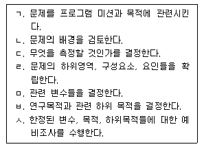
- ㄱ→ㄴ→ㄷ→ㄹ→ㅁ→ㅂ→ㅅ
- ㄱ→ㄴ→ㄹ→ㄷ→ㅁ→ㅂ→ㅅ
- ㄱ→ㄴ→ㅁ→ㄹ→ㅂ→ㄷ→ㅅ
- ㄱ→ㄴ→ㅂ→ㅁ→ㄹ→ㄷ→ㅅ
(정답률: 50%)
24. 다음의 특성을 가진 연구방법은?
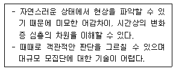
- 참여관찰(participant observation)
- 유사실험(quasi-experiment)
- 내용분석(contents analysis)
- 우편조사(mail survey)
(정답률: 88%)
25. 진행자(moderator)가 동질의 소수 응답자 집단을 대상으로 특정한 주제에 대하여 자유롭게 토론하는 가운데 필요한 정보를 수집하는 방법은?
- 문헌연구
- 전문가 의견조사
- 표적집단면접법
- 사례연구
(정답률: 83%)
26. 다음 중 탐색적 조사(exploratory research)에 관한 설명으로 가장 적합한 것은?
- 어떤 현상을 정확하게 기술하는 것을 주목적으로 하는 연구이다.
- 시간의 흐름에 따라 일반적인 대상집단의 변화를 관찰하는 조사이다.
- 동일한 표본을 대상으로 일정한 시간간격을 두고 반복적으로 측정하는 조사이다.
- 연구문제의 발견, 변수의 규명, 가설의 도출을 위해서 실시하는 조사로서 예비적 조사로 실시한다.
(정답률: 78%)
27. 이론으로부터 가설을 설정하고 가설의 내용을 현실세계에서 관찰한 다음, 관찰에서 얻은 자료가 어느 정도 가설에 부합되는가를 판단하여 가설의 채택 여부를 결정짓는 방법은?
- 귀납적(induction) 방법
- 연역적(dedution) 방법
- 관찰(observation) 방법
- 재조사법(test-retest method)
(정답률: 78%)
28. 설문지에서 폐쇄형 질문과 비교한 개방형 질문에 관한 설명으로 틀린 것은?
- 개방형 질문은 자료처리가 더 용이하다.
- 개방형 질문은 예비조사 시에 더 유용하다.
- 개방형 질문을 통해 생각하지 못한 의견을 더 얻을 수 있다.
- 개방형 질문은 무응답과 불성실한 응답이 나올 가능성이 더 많다.
(정답률: 76%)
29. 다음 중 연구가설의 기능과 가장 거리가 먼 것은?
- 경험적 검증의 절차를 시사해 준다.
- 문제해결에 필요한 관찰 및 실험의 적정성을 판단하게 한다.
- 현상들의 잠재적 의미를 찾아내고 현상에 질서를 부여할 수 있다.
- 다양한 연구문제를 동시에 해결하기 위해 많은 종류의 변수들을 채택하게 되므로 복잡한 변수들의 관계를 표시한다.
(정답률: 69%)
30. 실험설계를 사전실험설계, 순수실험설계, 유사실험설계, 사후실험설계로 구분할 때 유사 실험설계에 해당하는 것은?
- 단일집단 사후측정설계(one group posttest-only design)
- 집단비교설계(static-group comparison)
- 솔로몬 4집단설계(Solomon four group design)
- 비동질 통제집단설계(nonequivalent control group design)
(정답률: 53%)
2과목: 조사방법론 II
31. 평정 척도(rating wale)의 구성에 관한 옳은 설명을 모두 고른 것은?
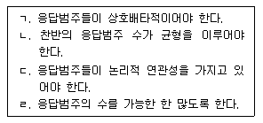
- ㄱ, ㄴ
- ㄷ, ㄹ
- ㄱ, ㄴ, ㄷ
- ㄱ, ㄷ, ㄹ
(정답률: 65%)
32. 측정오차(error of measurement)에 관한 설명으로 틀린 것은?
- 비체계적 오차는 상호상쇄(self-compensation)되는 경향도 있다.
- 체계적 오차는 항상 일정한 방향으로 작용하는 편향(bias)이다.
- 비체계적 오차는 측정대상, 측정과정, 측정수단 등에 따라 일관성 없이 영향을 미침으로써 발생한다.
- 측정의 오차를 신뢰성 및 타당성과 관련지었을 때 신뢰성과 타당성은 정도의 개념이 아닌 존재개념이다.
(정답률: 60%)
33. 측정의 신뢰도 제고방안에 관한 설명으로 틀린 것은?
- 측정도구를 구성하는 문항의 개념을 명확히 작성한다.
- 문항 간 상관관계가 유사할 경우에 측정항목수를 줄인다.
- 자료수집과정에서 측정의 일관성을 보장할 수 있도록 한다.
- 측정지표에 대하여 사전검사 또는 예비 조사를 실시한다.
(정답률: 77%)
34. 측정도구의 신뢰도 검사방법에 관한 설명으로 틀린 것은?
- 재검사법(test-retest method)은 측정대상이 동일하다.
- 복수양식법(paralle forms method)은 측정도구가 동일하다.
- 반분법(split-half method)은 측정도구의 문항을 양분하다.
- 크론바하 알파(Cronbach's. Alpha) 계수는 0에서 1사이의 값을 가지며, 값이 높을수록 신뢰도가 높다.
(정답률: 67%)
35. 표집오차(sampling error)에 대한 설명으로 틀린 것은?
- 표본의 분산이 작을수록 표집오차는 작아진다.
- 표본의 크기가 클수록 표집오차는 작아진다.
- 표집오차란 통계량들이 모수 주위에 분산되어 있는 정도를 말한다.
- 표본에서 크기가 같을 때 단순무작위 표집에서보다 집락표집에서 표집오차가 작다.
(정답률: 49%)
36. 다음 중 확률표본추출방법에 해당하는 것은?
- 편의표집(convenience sampling)
- 할당표집(quota sampling)
- 판단표집(judgement sampling)
- 단순무작위 표집(simple random)
(정답률: 73%)
37. 일반적인 표본추출과정을 바르게 나열한 것은?
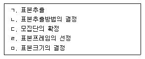
- ㄷ→ㄹ→ㄴ→ㅁ→ㄱ
- ㄹ→ㄷ→ㄴ→ㅁ→ㄱ
- ㄴ→ㄹ→ㄷ→ㅁ→ㄱ
- ㄷ→ㄴ→ㄹ→ㅁ→ㄱ
(정답률: 71%)
38. 할당표집(quota sampling)의 문제점과 가장 거리가 먼 것은?
- 조사자들이 조사하기 쉬운 사례들을 선택하는 경향이 있다.
- 조사과정에서 조사자의 편견이 개입될 여지가 충분히 있다.
- 확률표집이 아니기 때문에 특정 할당표집의 정확성을 평가하는 것은 어렵다.
- 확률표집에 비해서 시간과 경비가 많이 드는 편이다.
(정답률: 68%)
39. 다음 ( )에 알맞은 것은?
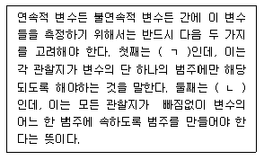
- ㄱ : 포괄성, ㄴ : 상호배타성
- ㄱ : 독립성, ㄴ : 상호배타성
- ㄱ : 상호배타성, ㄴ : 포괄성
- ㄱ : 상호배타성, ㄴ : 독립성
(정답률: 73%)
40. 지수(index)에 대한 설명으로 틀린 것은?
- 두 개 이상의 항목이나 지표들이 모여 만들어진 합성 측정 도구를 말한다.
- 측정하고자 하는 대상의 속성이 명확하고 복잡하지 않은 경우에 자주 활용된다.
- 지수 작성을 위한 자료는 서베이를 통해 직접 조사한 자료뿐만 아니라 간접적으로 확보한 2차 자료를 활용할 수도 있다.
- 개별 항목의 중요성에 차이가 있을 경우는 가중치(weight)를 부여하는 것이 좋다.
(정답률: 54%)
41. 다음 중 조작적 정의가 필요한 이유로 가장 적합한 것은?
- 개념을 가시적이고 경험적으로 표현하기 위해
- 이론의 구체성을 줄이기 위해
- 개념의 의미를 풍부하게 하기 위해
- 연구결과를 조작하기 위해
(정답률: 72%)
42. 표본의 크기결정을 위한 고려사항과 가장 거리가 먼 것은?
- 오차의 한계
- 신뢰수준
- 모집단의 표준편차
- 타당도
(정답률: 53%)
43. 민주주의에 대해서 다음 4가지 차원에 응답자들에게 평가하도록 하는 질문지를 구성하였다면 어떠한 척도기법에 해당하는가?
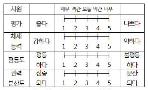
- 보가더스척도(bogardus scale)
- 스타펠척도(stapd scale)
- 의미분화척도(semantic differential scale)
- 소시오메트리척도(sociometry scale)
(정답률: 74%)
44. 다음 사례에서 발생하는 측정상의 문제는?
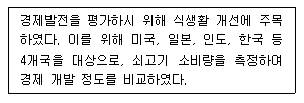
- 안정성
- 타당성
- 신뢰성
- 일관성
(정답률: 68%)
45. 개념타당성(construct validity)에 해당하지 않는 것은?
- 이해타당성(nomological validity)
- 내용타당성(content validity)
- 집중타당성(convergent validity)
- 판별타당성(discriminant validity)
(정답률: 50%)
46. A대학에서 학생들을 대상으로 사회조사를 할 때, 전체 학생들의 전공별 분포와 표본에 추출된 학생들의 전공별 분포가 일치하도록 표본추출을 하고 싶을 때 가장 적합한 방법은?
- 층화표집(stratified random sampling)
- 체계적 표집(systematic sampling)
- 군집표집(cluster sampling)
- 유의표집(purposive sampling)
(정답률: 60%)
47. 측정방법에 따라 측정을 구분할 때, 밀도(density)와 같이 어떤 사물이나 사건의 속성을 측정하기 위해 관련된 다른 사물이나 사건의 속성을 측정하는 것은?
- 추론측정(derived measurement)
- 임의측정(measurement by fiat)
- 본질측정(fundamental measurement)
- A급 측정(measurement: of A magnitude)
(정답률: 61%)
48. 모집단에 대한 정보를 담은 명부를 표집틀로 해서 일정한 순서에 따라 표본을 추출하는 표집 방법은?
- 단순무작위표집(simple random sampling)
- 체계적표집(systematic sampling)
- 유의표집(purposive sampling)
- 층화표집(stratified random sampling)
(정답률: 65%)
49. 제공되는 정보와 자료 분석에 이용할 수 있는 통계적 방법의 수준에 따라 척도를 순서대로 나열한 것은?
- 서열척도>명목척도>등간척도>비율척도
- 명목척도>서열척도>비율척도>등간척도
- 비율척도>등간척도>서열척도>명목척도
- 등간척도>비율척도>서열척도>명목척도
(정답률: 75%)
50. 어떤 측정수단을 같은 연구자가 두 번 이상 사용하거나, 둘 이상의 서로 다른 연구자들이 사용 한다고 할때, 그 측정 수단을 가지고 측정한 결과가 안정되고 일관성이 있는가를 확인하려고 한다면 어떤 것을 고려해야 하는가?
- 신뢰성
- 타당성
- 독립성
- 적합성
(정답률: 70%)
51. 암기력을 측정하기 위해 암기 한 것들을 모두 종이위에 쓰도록 하는 방법과 암기한 것을 모두 말하도록 하는 방법을 사용하는 경우, 서로 다른 두 가지의 측정방법을 측정한 결과 값들 간에 상관관계의 정도를 나타내는 타당성은?
- 내용타당성(content validity)
- 기준에 의한 타당성(criterion-related validity)
- 예측타당성(predictive validity)
- 집중타당성(convergent validity)
(정답률: 33%)
52. 리커트 척도의 단점에 해당되지 않는 것은?
- 엄격한 의미에서의 등간척도가 될 수 없다.
- 각 문항의 점수를 더한 총점으로는 각 문항에 대한 응답의 강도를 정확히 알 수 없다.
- 척도가 측정하고자 하는 개념을 제대로 측정하고 있는지의 문제가 여전히 남는다.
- 문항간의 내적 일관성을 확인할 수 없다.
(정답률: 48%)
53. 개념의 구성요소가 아닌 것은?
- 일반적 합의
- 정확한 정의
- 가치중립성
- 경험적 준거틀
(정답률: 41%)
54. 표본추출방법에 관한 설명으로 틀린 것은?
- 확률표본추출방법은 통계치로부터 모수치를 추정할 수 있다.
- 확률표본추출방법은 모집단의 구성요소가 표본으로 추출될 확률을 알 수 있다.
- 비확률표본추출방법은 표본추출오차를 구하기 쉽다.
- 비확률표본추출방법은 모집단의 구성요소가 표본으로 선정될 확률이 동일하지 않다.
(정답률: 74%)
55. 다음 중 표본의 크기가 같다고 했을 때 표집 오차가 가장 작은 표집방법은?
- 층화표집(stratified random sampling)
- 단순무작위표집(simple random sampling)
- 군집표집(cluster sampling)
- 체계적표집(systematic sampling)
(정답률: 52%)
56. 사회조사에서 발생하는 측정오차의 원인과 가장 거리가 먼 것은?
- 조사의 목적
- 측정대상자의 상태 변화
- 환경적 요인의 변화
- 측정도구와 측정대상자의 상호작용
(정답률: 72%)
57. 4년제 대학교 대학생 집단을 학년과 성, 단과대학(인문사회, 자연, 예체능, 기타)으로 구분하여 할당표집 할 경우 할당표는 총 몇 개의 범주로 구분되는가/
- 4
- 24
- 32
- 48
(정답률: 80%)
58. 잠재변수와 관찰변수에 관한 설명으로 틀린 것은?
- 잠재변수란 직접 관찰이 불가능한 변수를 의미한다.
- 대학생의 성적을 평점평균으로 나타낸 것은 관찰변수에 해당한다.
- 하나의 잠재변수를 측정하기 위해 하나의 관찰변수를 사용하는 것이 바람직하다.
- 지능, 태도, 직무만족도는 잠재변수에 해당한다.
(정답률: 61%)
59. 연구자들의 가설에 포함된 변수들에 관한 옳은 설명을 <보기>에서 모두 고른 것은?
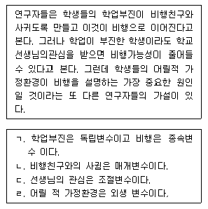
- ㄴ, ㄹ
- ㄱ, ㄴ, ㄹ
- ㄱ, ㄷ, ㄹ
- ㄱ, ㄴ, ㄷ, ㄹ
(정답률: 68%)
60. 전수조사와 비교한 표본조사의 장점으로 틀린 것은?
- 시간과 비용을 절약할 수 있다.
- 시간 내에 많은 정보를 얻을 수 있다.
- 표본오류가 줄어든다.
- 조사과정을 보다 잘 통제할 수 있어서 정확한 자료를 얻을 수 있다.
(정답률: 71%)
3과목: 사회통계
61. 실험계획에서 데이터의 산포에 영향을 미치는 것으로 실험환경이나 실험조건을 나타내는 변수는?
- 인자
- 실험단위
- 수준
- 실험자
(정답률: 54%)
62. 다음 ( )안에 들어갈 분석방법으로 옳은 것은?
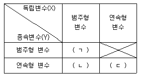
- ㄱ:교차분석, ㄴ:분산분석, ㄷ:회귀분석
- ㄱ:교차분석, ㄴ:회귀분석, ㄷ:분산분석
- ㄱ:분산분석, ㄴ:분산분석, ㄷ:회귀분석
- ㄱ:회귀분석, ㄴ:회귀분석, ㄷ:분산분석
(정답률: 56%)
63. 단순회귀모형 yi=β0+β1xi+Єi, i=1, ㆍㆍㆍ, n 에서 최소제곱법에 의한 추정회쉬직선
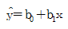
의 적합도를 나타내는 결정 계수 r2에 대한 설명으로 틀린 것은?- 결정계수 r2은 총변동
 중 추정회귀직선에 의해 설명되는 변동
중 추정회귀직선에 의해 설명되는 변동  의 비율, 즉, SSR/SST로 정의된다.
의 비율, 즉, SSR/SST로 정의된다. - x와 y 사이에 회귀관계가 전혀 존재하지 않아 추정회귀직선의 기울기 b1이 0인 경우에는 결정계수 r2은 0이된다.
- 단순회귀의 경우 결정계수 r2은 x와 y의 상관계수 rxy와는 직접적인 관계가 없다.
- x와 y의 상관계수 rxy는 추정회귀계수 b1이 음수이면 결정 계수의 음의 제곱근
 과 같다.
과 같다.
(정답률: 59%)
64. 확률변수 X가 평균이 3이고 분산이 5인 정규분포 N(3, 5)를 따른다고 할 때, 5X+3의 분포는?
- N(3, 25)
- N(18, 125)
- N(18, 5)
- N(15, 125)
(정답률: 59%)
65. Corr(X,Y)가 X와 Y의 상관계수일 때, 성립하지 않는 내용을 모두 짝지은 것은?
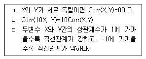
- ㄱ, ㄴ
- ㄱ, ㄷ
- ㄴ, ㄷ
- ㄱ, ㄴ, ㄷ
(정답률: 33%)
66. 대표본에서 변동계수(coefficient variation) c를 이용하여 모평균 μ에 대한 95% 신뢰구간을 구하고자 한다. 표본형균을
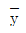
, 표본크기를 n이라 할 때, 신뢰구간으로 옳은 것은?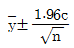
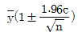
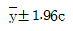
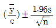
(정답률: 41%)
67. 유권자 전체를 대상으로 사형제도 폐지에 대한 여론조사를 한 결과 다음의 결과를 얻었다. 인천지역의 경찰관들 중 100명을 임의로 추출 하여 의견을 조사한 경과가 다음과 같았다. 귀무가설 『H0:사형제도 폐지에 대한 인천지역 경찰관들의 의견은 유권자 전체의 의견과 다르지 않다.』를 검정하고자 한다. 검정 결과로 옳은 것은? (단, X2(2, 0.⑤)=5.99, X2(2, 0.025)=7.38)
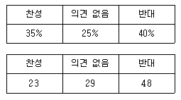
- 유의수준 5%에서 귀무가설을 채택한다.
- 유의수준 5%에서 귀무가설을 기각한다.
- 유의수준 1%에서 귀무가설을 기각한다.
- 유의확률을 알 수 없어 판단할 수 없다.
(정답률: 42%)
68. 다음 분산분석표의 ( )에 들어갈 값으로 옳은 것은?
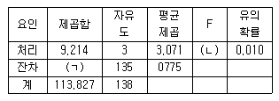
- ㄱ:104.613, ㄴ:3.963
- ㄱ:101.321, ㄴ:1.963
- ㄱ:103.223, ㄴ:3.071
- ㄱ:104.231, ㄴ:0.775
(정답률: 67%)
69. 평균이 10이고 분산이 4인 정규분포를 따르는 모집단으로부터 크기가 4인 표본을 추출하였다. 이때 표본평균의 표준편차는?
- 1
- 2
- 4
- 10
(정답률: 37%)
70. 10m당 평균 1개의 흠집이 나타나는 전선이 있다. 이 전선 10m를 구입하였을 때 발견되는 흠집수의 확률분포는?
- 이향분포
- 포아송분포
- 기하분포
- 초기하분포
(정답률: 55%)
71. 모평균 θ에 대한 95% 신뢰구간이(-0.042, 0.522) 일 때, 귀무가설 H0:θ＝０과 대립가설 H1:θ≠0을 유의 수준 0.⑤에서 검정한 결과에 대한 설명으로 옳은 것은?
- 신뢰구간이 0을 포함하고 있으므로 귀무가설을 기각할 수 없다.
- 신뢰구간과 가설검정은 무관하기 때문에 신뢰구간을 기초로 검증에 대한 어떠한 결론도 내릴 수 없다.
- 신뢰구간을 계산할 때 표준정규분포의 임계값을 사용했는지 또는 t분포의 임계값을 사용했는지에 따라 해석이 다르다.
- 신뢰구간의 상한이 0.522로 0보다 크므로 귀무가설을 기각한다.
(정답률: 50%)
72. 확률변수 X의 분산이 16, 확률변수 Y의 분산이 25, 두 확률변수의 공분산이 -10일 때, X와 Y의 상관계수는?
- -1
- -0.5
- 0.5
- 1
(정답률: 49%)
73. 다음 중 오른 쪽으로 꼬리가 긴 분포를 갖는 것은?
- 평균=50, 중위수=50, 최빈수=50
- 평균=50, 중위수=45, 최빈수=40
- 평균=40, 중위수=45, 최빈수=50
- 평균=40, 중위수=50, 최빈수=55
(정답률: 64%)
74. 이상치(outlier)를 탐지하는 기능을 가지고 있고 최솟값, 제1사분위수, 중앙값, 제3사분위수, 최댓값의 정보를 이용하여 자료를 도표로 나타내는 방법은?
- 도수다각형
- 히스토그램
- 리그레쏘그램
- 상자-수염그림
(정답률: 62%)
75. 두 변수 X, Y의 상관계수에 대한 유의성 검정 (H0:ρXY=0)을 t-검정으로 하고자 한다. 이 때 올바른 검정통계량은? (단, rXY:표본 상관계수)
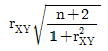
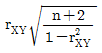
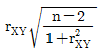
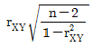
(정답률: 45%)
76. 가설검정에서 사용하는 용어에 대한 설명으로 틀린 것은?
- 제1종 오류란 귀무가설 H0가 참임에도 불구하고 H0를 기각하는 오류를 말한다.
- 제2종 오류란 대립가설 H1이 참임에도 불구하고 H0를 기각하지 못하는 오류를 말한다.
- 제1종 오류를 범할 확률이 최대허용한계를 유의수준이라 한다.
- 제2종 오류를 범할 확률이 최대허용한계를 유의확률이라 한다.
(정답률: 59%)
77. A회사에서 생산하고 있는 전구의 수명시간은 병균이 μ=800(시간)이고 표준편차가 σ=40(시간)이라고 한다. 무작로 이 회사에서 생산한 전구 64개를 조사하였을 때 표본이 평균수명시간이 790.2 시간 미만일 확률은 약 얼마인가? (단, z0.0⑤=2.58, z0.025=1.96, z0.⑤=1.645)
- 0.01
- 0.025
- 0.⑤
- 0.10
(정답률: 56%)
78. A대학 학생들의 주당 TV 시청 시간을 알아보고자 임의로 9명을 추출하여 조사한 경과는 다음과 같다. TV 시청 시간은 모평균이 μ인 정규분포를 따른다고 가정하자 μ에 대한 추정량으로 표본 평균
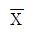
를 사용했을 때 추정치는?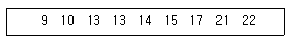
- 14.3
- 14.5
- 14.7
- 14.9
(정답률: 64%)
79. 어떤 화학 반응에서 생성되는 반응량(Y)이 첨가제의 양(X)에 따라 어떻게 변화하는지를 실험하여 다음과 같은 자료를 얻었다. 변화의 관계를 직선으로 가정하고 최고제곱법에 의하여 회귀직선을 추정할 때 추정된 회귀직선의 절편과 기울기는?
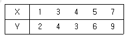
- 절편 0.2, 기울기 1.15
- 절편 1.15, 기울기 0.2
- 절편 0.4, 기울기 1.25
- 절편 1.25, 기울기 0.4
(정답률: 36%)
80. 어느 백화점에서는 물품을 구입한 고객의 25%가 신용카드로 결제한다고 한다. 금일 40명의 고객이 이 매장에서 물건을 구입하였다면, 몇 명의 고객이 신용카드로 결제하였을 것이라 기대되는가?
- 5명
- 8명
- 10명
- 20명
(정답률: 72%)
81. 다음은 가전제품 서비스센터에서 어느 특정한 날 하루 동안 신청 받은 애프터 서비스 건수이다. 자료에 대한 설명으로 틀린 것은?
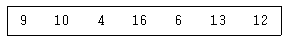
- 평균과 중앙값은 10으로 동일하다.
- 범위는 12이다.
- 왜도는 0이다.
- 편차들의 총합은 0이다.
(정답률: 59%)
82. 다음 분산분석표에서 ( )에 들어갈 F-값은?
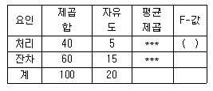
- 1.5
- 2.0
- 2.5
- 3.0
(정답률: 63%)
83. 5명의 흡연자를 무작위로 선정하여 체중을 측정하고, 금연을 시킨 뒤 4주 후에 다시 체중을 측정하였다. 금연 전후의 체중에 변화가 있는가에 대하여 검정 하고자 할 때, 검정통계량의 값은?
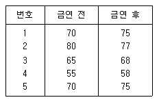
- -0.21
- -0.32
- -0.48
- -1.77
(정답률: 30%)
84. 어떤 산업제약은 제품 중 10%는 유통과정에서 변질되어 약효를 발휘할 수 없다고 한다. 이를 확인하기 위하여 해당 제품 100개를 추출하여 실험하였다. 이때 10개 이상이 불량품일 확률은?
- 0.1
- 0.3
- 0.5
- 0.7
(정답률: 30%)
85. 독립변수가 2개인 중회귀모형 yi=β0+β1x1i+β2x2i+Єi, i=1, ㆍㆍㆍ, n의 유의성 검정에 대한 설명으로 틀린 것은?
- H0:β1=β2=0
- H1:회귀계수 β1, β2 중 적어도 하나는 0이 아니다.
 이면 H0를 기각한다.
이면 H0를 기각한다.- 유의확률 p가 유의수준 α보다 작으면 H0를 기각한다.
(정답률: 56%)
86. 다중회귀분석(Multiple Linear Regression)에 대한 설명으로 틀린 것은?
- 결정계수는 회귀직선에 의해 종속변수가 설명되어지는 정도를 나타낸다.
- 중회귀방정식에서 절편은 독립변수들이 모두 0일 때 종속변수의 값을 나타낸다.
- 회귀계수는 해당 독립변수가 단위 변할때 종속변수의 증가량을 뜻한다.
- 각 회귀계수의 유의성을 판단할 때는 정규분포를 이용한다.
(정답률: 36%)
87. 어떤 전기제품의 내부에는 부품 3개가 병렬로 연결되어 있다. 적어도 하나가 정상적으로 작동 하면 전기제품은 정상적으로 작동한다. 각 부품이 고장 날 사건은 서로 독립이며, 각 부품이 정상적으로 작동할 확률은 모두 0.85로 알려져 있다. 이 전기제품이 정상적으로 작동할 확률은 얼마인가?
- 0.6141
- 0.9966
- 0.0034
- 0.3859
(정답률: 46%)
88. 두 집단의 분산의 동일성 검정에 사용되는 검정통계량의 분포는?
- t-분포
- 기하분포
- X2-분포
- F-분포
(정답률: 45%)
89. 정규분포 N(12, 22)를 따르는 확률변수 X로부터 크기 n개의 표본을 뽑았다. 표본평균이 10과 14사이에 있을 확률이 0.9975라면 몇 개의 표본을 뽑은 것인가? (단, P(|Z|<3=0.9975, P(Z<3)=0.9987)
- 36
- 25
- 16
- 9
(정답률: 46%)
90. 다음 PC에 대한 월간 유지비용(원)을 종속변수로 하고 주간 사용기간(시간)을 독립변수로 하여 회귀분석을 한 결과이다. 월간 유지비용이 사용기간과 관련이 있는지 엽를 검정하기 위한 t통계량의 값은?(오류 신고가 접수된 문제입니다. 반드시 정답과 해설을 확인하시기 바랍니다.)
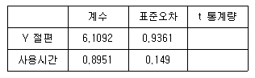
- 4.513
- 5.513
- 6.007
- 6.526
(정답률: 34%)
91. 평균체중이 65kg이고 표준편차가 4kg인 A고등학교 1학년 학생들에서 임의로 뽑은 크기 100명 학생들의 평균체중
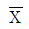
의 표준편차는?- 0.04kg
- 0.4kg
- 4kg
- 65kg
(정답률: 56%)
92. 데이터의 산포도를 측정할 수 있는 측도는?
- 표본평균
- 중앙값
- 사분위수범위
- 최빈값
(정답률: 61%)
93. 귀무가설 H0가 참인데 대립가설 H1이 옳다고 잘못 결론을 내리는 오류는?
- 제1종 오류
- 제2종 오류
- 알파오류
- 베타오류
(정답률: 65%)
94. σ2이 알려져 있는 경우, 모평균 μ를 추정하고자 할 때, 표본의 크기를 계산하기 위해 필요한 정보는?
- 표본평균의 허용오차와 모집단의 표준편차
- 표본평균의 허용오차와 표본 집단의 평균
- 표본 집단이 표준편차와 모집단 평균의 허용
- 집단의 표준 편차와 모집단의 평균
(정답률: 30%)
95. 우리나라 대학생들의 1주일동안 독서시간은 평균 20시간, 표준편차가 3시간인 정규분포를 따른다고 알려져 있다. 이를 확인하기 위해 36명의 학생을 조사하였더니 평균 19시간으로 나타났다. 이를 이용하여 우리나라 대학생들의 평균 독서시간이 20시간보다 작다고 말할 수 있는지를 검정 한다고 할 때 다음 설명 중 옳은 것은? (단, P(|Z|<1.645)=0.9 P(|Z|<1.96)=0.95)
- 검정통계량의 값은 -2이다.
- 가설 검정에는 X2분포가 이용된다.
- 유의수준 0.⑤ 에서 검정할 때, 우리나라 대학생들의 평균 독서시간이 20시간보다 작다고 말할 수 없다.
- 표본분산이 알려져 있지 않아 가설 검정을 수행할 수 없다.
(정답률: 42%)
96. 공정한 동전 10개를 동시에 던질 때, 앞면이 정확히 1개만 나올 확률은?
- 3/1024
- 9/1024
- 10/1024
- 15/1024
(정답률: 67%)
97. 5개의 수치(왼쪽부터 최솟값, 제1사분위수, 제2사분위수, 제3사분위수, 최댓값)가 다음과 같이 주어져 있을 때, 범위와 사분위수 범위(IQR)는 얼마인가?
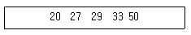
- (30, 23)
- (30, 6)
- (50, 6)
- (20, 9)
(정답률: 64%)
98. 일원배치 분산분석에서 자유도에 대한 설명으로 틀린 것은?
- 집단간 변동의 자유도는 (집단의 개수-1)이다.
- 총 변동의 자유도는 (자료의 총 개수 -1)이다.
- 집단내 변동의 자유도는 총변동의 자유도에서 집단간 변동의 자유도를 뺀 값이다.
- 집단내 변동의 자유도는 (자료의 총 개수-집단의 개수-1) 이다.
(정답률: 41%)
99. 다음 표는 빨강, 파랑, 노랑 세 가지 색상에 대한 선호도가 성별에 따라 차이가 있는지를 알아보기 위해 초등학교 남학생 200명과 여학생 200명을 임의로 추출하여 선호도를 조사한 분할표이다. 성별에 따라 선호하는 색상에 차이가 없다면, 파랑을 선호하는 여학생 수에 대한 기대도수의 추정값은?
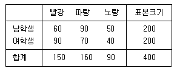
- 70
- 75
- 80
- 85
(정답률: 47%)
100. 극단값이 포함되어 있는 자료의 대표값을 구하고자 한다. 극단값에 의한 영향을 줄이기 위한 측도로 적합하지 않은 것은?
- 중앙값
- 제50백분위수
- 절사평균
- 평균
(정답률: 56%)
따라서 정답은 "자료분석에 소요되는 시간이 짧아 소규모 분석에 유리하다."입니다.
이유는 질적연구에서는 주로 비통제적 관찰이나 면접 등을 통해 얻은 자료를 분석하므로 양적연구보다 자료의 양이 적고, 자료의 특성에 따라 분석 방법이 다르기 때문입니다. 따라서 소규모 분석에는 양적연구보다 더 유리합니다.